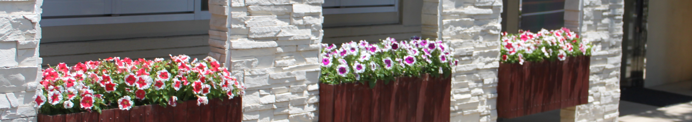

５−① 「～～」
準備中

作文ワールドⅢ 社会科作文 その４ 「旅行記・紀行文」特集 ２ も く じ ⇒ ……………………………… |
１．「GAKKO・2016 バリ島キャンプ」 （高２ ひなのさん） ① Gakko・キャンプの概要 ② キャンプの一日 ③ ワークショップ１−「知覚と錯覚」 ④ ワークショップ２−「特権」 ⑤ ワークショップ３−「デザイン」 ⑥ エピソード ２．「ヨーロッパ音楽・景観紀行」 （中２ 孟之進くん） ① ザルツブルク（１） ② ザルツブルク（２） ③ ハルシュタット ④ ウィーン ⑤ プラハ（１） ⑥ プラハ（２） ３．「イタリア紀行」（高３ 咲歩さん） ① イタリア演奏旅行 ② イタリア美術館めぐり ４．「国際交流」 （中３ 陶子さん） ①「韓国の同級生」 ②「パナマの留学生」 ③「スペイン語教室」 |
「社会科作文」−その１ −その２ −その３ −その５
作文ワールドⅠ（原点） 作文ワールドⅡ（1人1人の作文）
作文ワールドⅣ（理科作文） 作文ワールドⅤ（スポーツ作文）
Ⅵ（七五の四行詩） Ⅶ（図工作文） Ⅸ（家庭科作文） Ⅷ（エトセトラ）
Ⅹ（作文のこころ）
「東日本大震災」の作文・第１部 第２部・第３部
作文打出の小づち 総もくじ
中学生の作文と国語 作品展示場（扉） トップページ
| 添削例・諸注意 | |
| ７月２３日から８月４日まで、GAKKOというサマーキャンプで、インドネシアのバリ島に滞在しました。このキャンプは、アメリカのイエール大学を卒業した日本人が始めたもので、今年で５年になります。キャンプ地は
Green Camp といい、ジャングルの丘の上にあります。 今年のキャンプには、kohai と呼ばれる世界各地の高校生３７人と、sempai と呼ばれる海外の有名大学の学生や卒業生１５人が参加しました。高校生はベトナム、タイ、エジプト、パキスタン、アフガニスタン、インドネシア、アメリカ、レバノン、ドイツ、モロッコなど、いろいろな国や地域から来ていました。sempai は、kohai としての私たち高校生に対し、１２日間を通して授業をしてくれます。sempai はそれぞれ建築、心理、言語、経済、哲学など、自分の分野に関するワークショップを開きます。私たちは毎日異なる授業を受けます。 Green Camp には、丘の上のほうに４～６人が泊まれる小屋が点在しています。円形の竹の家で、扉を開けると、竹でできた2段ベッドが3組並んでいます。天井は真ん中が高く、外から見ると、とんがり帽子の形をしています。建物や家具は全て竹でできていて、丈夫で涼しげな造りです。電気は電灯だけに通っています。天井や壁は吹き抜けで、風がよく通ります。丘の斜面には食堂、教室があり、建物の一番下には、Yoga Studio があります。高床式の円形の建物で、天井が高く、周囲は吹き抜けで、風がよく通ります。50メートルくらい下に川が流れていて、水の音がよく聞こえます。 シャワーとトイレ、洗面台は建物ごとにあります。シャワーはお湯がじゅうぶんに出ないことが多く、蛇口を全開にしても、冷たい水が細い線になって出てくるばかりでした。お湯は時間帯やシャワーを使っている人数によってまちまちで、夜は冷たいシャワーを浴びることが何度もありました。そのため、日がたつにつれて、シャンプーやボディーソープの量をできるだけ少なくして、短い時間でシャワーを済ませらるようになりました。 トイレは、個室に便器が２つあります。大小で異なる便器を使います。水洗ではないため、小用の場合は、済ませた後備え付けのシャワーで流します。ティッシュペーパーは、流すと詰まってしまうので、横にあるゴミ箱に捨てます。用足しの後はバケツに入っている木くずを上にまいて、臭いが広がるのを抑えます。便が溜ったら、キャンプ場で働く人たちが回収してくれます。 Green Camp は、環境に配慮するというポリシーのもと、持続性を意識した生活を送ることを求めています。食事の野菜はキャンプ場の敷地内の畑で採れたものを使います。食事ごとに使うハンドソープは、天然の素材を手づくりしたものです。 ジャングルの中での生活は、日本の日常とはかけ離れたもので、水道の水やトイレなどが自動だということがいかに便利であるかということに気付きました。その反面、日本での生活では、自分の行動が環境とどのように関わっているかを考える機会はほとんどないため、常に外の風を感じる空間で過ごしたり、自分が排泄したものの先を考えたりすることは、今までにない貴重な経験でした。このサマーキャンプでは、たくさんの人に関わる以外に、自然と自分とのつながりを考え通すことができました。 |
※ GAKKOは、学校だね。 ※ kohai は後輩、senpai は先輩だね。 |
| 添削例・諸注意 | |
| キャンプの朝は、7時に鳴るドラの音で始まります。敷地の中には４～5人が泊まれる小屋が点在していて、sempai のポポがあたりを練り歩きながら、ドラを打ち鳴らします。そして、７時半に全員が
'Yoga Studio' という高床式の円形の建物に集まります。円形の床の円周にクッションを並べて座ります。一人一人が全員を見渡せます。ここでは始めに、ひたすら何かを書き続けます。前日の思い出や、その時に感じたことなど、何でもよいので、筆を止めずに、母語・他国語を問わず書き連ねます。そのあと、ポポの指導で２０分ほど瞑想をします。ポポの声に従って深い呼吸をして、自分の体の空気の行く道を辿ったり、身の回りで感じる音や臭い、空気に集中したり、自分はどんな時に幸せを感じるのかを考えてみたりします。瞑想では、一つのことに集中しようとしても、いくつもの雑念が浮かんだり、考えすぎて頭がくらくらしたりすることもありました。けれども、毎朝涼しい空気の中で、木々や川の水音に囲まれて自分と向き合うのは、それまでに経験したことのないものでした。瞑想のあと、隣に座っている人と、２０分間どんなことを考えたか、何かうまくできたか、できなかったかなどを話します。毎朝、異なるペアで感じたことを気の済むまでじっくり話します。それを終えた人からカフェテリアで朝食をとります。朝食を忘れるほど話し込んでしまったこともありました。 ８時ごろから朝食になります。食事は、カフェテリアの奥に並べられている果物や料理を、自分の好きなだけよそいます。朝は、パンやコーンフレーク、たまごやきなどに加えて、スイカやメロン、ココナッツミルクなど、自然のものもたくさんあります。食事は、このキャンプ場に勤めているバリの女性たちが作ってくれます。毎回、竹を緩く編んだバスケットの上に、適度の大きさに切られたバナナの葉を重ね、その上に食べ物を載せます。食事を終えたらバナナの葉を捨て、竹のバスケットは次の食事のために重ねておきます。机と椅子が並べられているので、食事ごとに違う人と話すことがよくあります。ベトナムの友だちはフォーという米の麵料理が恋しいと言い、アフガニスタンから来た男の子はミルクが毎日飲めるなんて初めてだと興奮気味でした。 日中は、sempai によるワークショップが開かれます。sempai によって建築、数学、哲学、言語、心理、美術など、教える分野が異なります。そのため、毎日全く新しいアクティビティーがあります。建築家の sempai の授業では、バリにたくさんある竹を使って、大きなシェルターを作り、ハンモックを吊るすなどしました。ダンスを勉強している sempai の授業では、感情を動きで表現することを教わりました。ふだん学校で受けるような、机と椅子に座って先生の話を聞くというスタイルではなく、自分たちも話して、動いて学んでいきます。昼食をはさんで、ワークショップが終わるのは５時～７時です。 夕食が始まってしばらくすると、sempai が一人ずつ自分の高校時代の話をしてくれます。高校生の頃どんなことをしていたか、高校生の kohai にどんな言葉をかけたいか、などをスピーチします。夕食の後はそのまま family time になります。キャンプ中は4～5人のkohai で１組の family が組まれます。このメンバーと１人の sempai で毎晩１時間ほど話をします。その日のハイライトを３つ挙げたり、学んだこと、悔しかったことを話したり、自国の紹介などをします。少人数のグループでその日のことを共有すると、身近に親しさを感じます。 そのあとは小屋に帰って、それぞれが思い思いに家族と連絡を取ったり、日記を書いたり、音楽を流して踊ったり、友だちとおしゃべりをしたりして過ごします。シャワーを浴び、洗濯をし、翌日の準備を整え、１１時ごろ蚊帳の中へ入って眠ります。 |
※ どんな器によそうのかは、この後に書かれているね。 ← 机と椅子のどこに座ってもよいので、 |
付け加えることは何もないね。
もどる
| 添削例・諸注意 | |
| sempai はそれぞれ建築、哲学、言語学、政治経済、心理学などの異なる専攻分野をもっています。そのため、１２日間を通しての授業では、毎日全く異なるアクティビティがありました。ふだん学校で受けるような、教室の中で机と椅子に座って先生の話を聞くというスタイルではなく、自分たちが話して動いて学んでいきます。いくつもの授業で、特に印象深かったのは、ドーラというsempai
による授業です。 ドーラはロンドン大学で心理学と神経科学を学び、卒業した今は大学院でPhDを取ることを目指しています。彼女の授業は、キャンプの６，７日目に行われました。６日目ははじめに、ドーラのパワーポイントによるプレゼンテーションがありました。テーマは知覚で、私たちの視覚は対象をどのように捉えているのかという疑問から出発しました。錯覚は、対象がある特別な条件のもとで、その客観的事実を異なって知覚することだといいます。幾何学的錯覚（optical illusion）は、錯覚の一つで、代表的なものにミュラー・リラ—の図形があります。これは、長さの等しい２本の直線のうち、外向きの矢羽の付いた直線は内向きの矢羽の付いた直線よりも長くみえるというものです。客観的な長さよりも長く見えたり短く見えたりする錯覚の一例です。ほかにも、多義図形（ambiguous figures)や、反転図形（reversible figures）など、さまざまな錯覚の例が紹介されました。 話の中で、色について、ある色だと認識するのは、その周りの色や、光と影の強さ、見る方向や角度などに影響されるということ、また、同じ色でも状況によって違う色として認識されることもあるということでした。 プレゼンテーションのあと、kohai を４つのグループに分け、それぞれに一人の sempai を加え、ディスカッションをしました。テーマは、”What is the definition of reality and illusion ? "です。その前のプレゼンで、私たちは客観的事実を異なって知覚することがあると学んでいたので、それを踏まえて、現実と錯覚についてどう定義すればよいかを話し合いました。私のグループのベトナム人のアンなの子は、”Things that we see is not whole picture."と言いました。私たちが見ているものは、事実を全て映しているものではない、ということです。私たちは物事の whole picture を見ることは難しいという意見が強くなりました。パキスタンの女の子は、私たちは常に自分のレンズを通して世界を見ているから、人によって同じ物でも見え方が違うと言いました。 そこから、レンズは自分のアイデンティティ、固定観念で、環境によって形成されるということに話が落ち着き、その上で、illusion とは何かということに話を進めました。事実と異なる姿を見せる錯覚は、現実の上に覆いかぶさるベールだとも言えます。その時、誰かが「私たちも自分自身に illusion をかけているかもしれないよ」と言いました。そこから、"What do I put an illusion to make myself ? "（自分をどのように周りに見られたいがために illusion をかけているか）という話になりました。グループの９人が一人一人じぶんにかけている illusion について話し始めました。ある女の子は、人に強く、タフに見られるように、スカートなど女の子らしい服ではなく、Tシャツを着、ジーンズをはいていると言いました、一方、ある男の子は、見た目や服装ではなく、中身で自分を判断してもらいたいから、洋服には何もこだわりがないと言いました。話しているうちに、誰もが本当の姿を外では一部隠したり変えたりしていることが分かってきました。 ドーラの授業では、錯覚の専門的知識を日常の生活に落とし込んで考えました。ディスカッションでは、誰かの一言で新しい気づきがあったり、新たな疑問が浮かんだりしました。授業はすべて英語なので、自分の意見を言うときにうまく表現できず、悔しい思いもしました。それでも、仲間と reality と illusion について様々な面から考えていくのは、刺激のあふれる時間でした。特に、自分が「自分」についてどう捉え、他者にどう見てもらいたいと思っているのか、仲間の意見を参考に、客観的に考えるよい機会になりました。 |
これだけのことをよく覚えているのは、
それだけ真剣にキャンプに関わっていたからなのだろう。
もどる
| 添削例・諸注意 | |
| GAKKOキャンプの４日目に、Joyce という sempai によるワークショップがありました。これは１２日間のワークショップの中で最も強烈な印象を受けた授業でした。 Joyce のワークショップのテーマは、’privilege’でした。日本語では特権、特典等と訳されます。はじめに、Joyce による30分ほどのプレゼンテーションがありました。彼女はアメリカの大学で政治学を専攻している、韓国系アメリカ人です。家族はみんな韓国に住んでいて、、彼女は韓国で暮らしたことがありますが、生活の基盤はアメリカです。幼いころから、南北に分かれた朝鮮半島の北朝鮮に関心をもっていたと言います。昨年は大学の研究の一環で、北朝鮮から韓国に逃れた人々にインタビューをして、北朝鮮の様子を生で聞いていくうちに、韓国人の自分と北朝鮮の人々とを分けているものは何だろうという疑問が浮かんできたそうです。それが、privilege の研究のきっかけになったということでした。 最初に、「特権はそれを持つ人たちが守る」と言いました。強い国は強くなり、弱い国は弱くなる傾向があるとすれば、弱い国は強い国のグループに入ることが難しくなります。私たち一人一人はどんな視点や考えを持つべきなのか、自分の持つ privilege は何なのかを話し合うことになりました。そのために、その場にいた kohai 約20人と sempai ５人が輪になりました。すると、Joyce が次々と質問を読み上げます。Yes なら、輪の中心に向かって一歩進み、No なら、そこにとどまります。輪にはアメリカ、ベトナム、タイ、インドネシア、イスラエル、モロッコ、アフガニスタン、ロシア、レバノンなど、様々な国や地域から来た人がいました。 はじめのほうの質問に、「自分の住む国や地域は安全だと思うか」というのがありました。私は迷いなく一歩を踏み出しましたが、輪を見渡すと、形は既に大きく崩れていました。質問は次から次へと読み上げられるため、私は質問を聞き取ることで頭がいっぱいで、周りを見る余裕はあまりなかったのですが、イスラエルとアフガニスタンから来た kohai が下を向いて動かない姿が見て取れました。ほかにも、「人種差別を受けたと感じたことはあるか」、「家族や親類、友だちなど、身近な人を戦争やテロ、紛争などで失くしたことがあるか」などの質問がありました。質問の多くは戦争や差別についてのものでした。最初の質問以降、私はその場にとどまるばかりでした。差別を受けたと感じたことも、自分の身に危険を感じたこともなかったからです。 一方で、どんどん輪の中心に近づいていく人がいました。アフガニスタンの生徒です。彼は悲しいような、けれども何かを悟ったような、冷静な表情で一歩ずつ進んでいました。わたしの目は彼に吸い寄せられました。同じ歳の人が、自分とは全く異なった境遇で生きていて、ニュースの画面での出来事だと思っていた人が目の前にいるのを見て、過酷な現実を突きつけられたような気持ちでした。生まれてからずっと日本で、日本人に囲まれて育ってきた私にとって、このアクティビティーは十分すぎるほどのインパクトでした。アフガニスタンに限らず、人によって質問の答えは違って、最終的には輪の形は消えていました。 その時の私は、「私にとっての privilege は何だろう」、「私はどんなprivilege をもっているのだろう」と考えて、頭がいっぱいでした。同時に、紛争や差別などの言葉を自分のこととして考え、ほかの kohai の質問の答えを見て、どきどきと緊張してきました。生まれて初めての気持ちで、どうすればいいのか、頭がふらふらして、手足もふらふらしてきました。 このアクティビティーのあと、全員で 'privilege' について自由に話しました。私だけでなく他の人も、世界中には様々な人がいて、様々な出来事が起きていることを身をもって感じたということでした。私は自分の日本での生活がどれだけ安全で、尊いものなのか、改めて気づきました。私はそれも一種の privilege かと思いましたが、毎日が命の危険と隣り合わせの地域には privilege がないのではないことも知りました。アフガニスタンの男の子は、「僕は国を出て、ここで学ぶ機会を得た。僕は最高の privilege を持っている」と言いました。世界には私が知らないいくつもの面があることを強く印象付けられた、忘れられないワークショップでした。 |
← ……難しくなるということから、私たち一人一人は…… |
輪が崩れていたとか、輪が消えていたとかいうのは、
静かなインパクトとなっている。
世界の平和を実現する難しさを感じさせる。
もどる
| 添削例・諸注意 | |
| GAKKO camp の９日目に、デザイナーのJulia によるワークショップが開かれました。彼女は大学を卒業して、現在はデザイナーとしてサンフランシスコのスタジオで働いています。 Julia が手がけているのは、スーパーに並ぶ商品の広告パッケージやイベントのポスター、料理本の写真のスタイリング、ウェブサイトのデザインから、指輪やブレスレットなどのアクセサリー、食器など、多岐に渡っています。Julia は、デザインは工業製品であっても美術品や日用品であっても、全て意図や目的をもって考えられていると言います。デザインを考える上で重要なキーワードは、バランス、コントラスト、パターン、リズム、動き、強調、統一性だそうです。缶詰一つのパッケージでも、巻かれたラベルの色、文字のフォント、大きさ、イラストなど、全てがデザイナーの意図によって選ばれていると言い、Julia は、依頼する人や会社、団体との対話を繰り返し、デザインを通して伝えたい情報、強調する点や特徴、他との差別化を図る要素を明確にしていくと言います。毎回異なる媒体を扱うため、常に新しいことを勉強する必要があると言っていました。 ワークショップの前半は、Julia の仕事のことや、デザインとは何かについてのプレゼンテーションで、後半は kohai 一人一人がデザインをすることになっていました。 デザインのテーマは、自分の旗を作ることです。キャンプ場に生えている木々の葉を使った手作りの紙に、絵の具で自分の旗を描きます。Julia によると、何かをデザインするうえで、デザイナーは「アイデンティティー」を考えます。自分のアイデンティティ−は何かを考え、次にそれを視覚化する必要があります。世界の国旗には一つ一つ意味があり、象徴するものがあるように、自分の複雑な考え、感情を形と色にして、旗として自分を表します。 私はまず、自分のアイデンティティーを表す言葉を探すことから始めました。自分はどんな人間で、何が自分を作り、他者とどう違っているのか、考えましたが、見当もつきませんでした。そこで、思いつくままにノートに言葉を書き連ねていきました。observing（観察）、curious（好奇の）、timid（臆病な）、negative（否定的）などが挙がりました。それを見て、Julia と、ロシアの Ekaterina という友だちが、”You should add 'ambitious and 'caring' "と言いました。私は「野心的な」とか「思いやりのある」という意味の言葉を加えるのは気恥ずかしかったのですが、自分を表す言葉だと思って受け取りました。次に、自分を表す色を、それまでに挙がった言葉をもとに選んでいきました。「Green」と「Yellow」になりました。２つの色にはそれぞれ、次のような意味を込めました。 Green − nature, green tea (from my hometown) Yellow − curious,paying attention,vivid そして、実際に絵の具で自分の旗を描いていきます。私は curiosity を何本ものぐねぐねと伸びる黄色の曲線にし、そのコントラストとして、自分のhope がぶれないようにという願いを込めて緑の直線で表しました。 最期に、描き上げた旗を、kohai が一人ずつ前に出て紹介します。sempai を含め、５０人近くの前で一人きりで話すことは、キャンプが９日目であっても緊張するものでした。自分のアイデンティティーとなる言葉、意味、形、色について話し始めると、周りの人たちがじっと私を見つめながら、私の話を聞いている様子に気がつきました。自分の話す英語の文法、単語、発音は間違っていないだろうか、と考えるよりも、自分の思いを伝えようと必死でした。時々つかえてしまいながらも、話し切りました。 自分は何者なのか、ということを客観視して考え、それを視覚化していくのは、難しい作業でしたが、今回のワークショップでは、目的をもって選択をしていくというデザインの方法とテクニックを学ぶことができました。ついでに、自分の考えを伝えたいと思えば、不十分な英語で、かつ即興であっても、通じることを実感できる機会となりました。 |
◯ ひなのさんが住んでいるのは埼玉県の狭山地方で、お茶の産地なのだね。 |
１−⑥ 「エピソード」
「GAKKO」は勉強の場であるとともに、
国際交流の場でもある。
今回はそのうちの一つを紹介して
キャンプの締めくくりとしよう。
| 添削例・諸注意 | |
| このキャンプに参加した高校生の中に、ひときわ目立った３人の男の子がいました。３人はアフガニスタン人で、インターネットでこのキャンプのことを知り、参加費、飛行機代を運営団体から出してもらって参加したということでした。彼らは、自国で学んだという流暢な英語を話し、日本のことを知りたいと言って、私にもよく話しかけてきました。バリに到着して、アフガンからの参加者がいると聞いた時、私の頭に思い浮かんだのは、紛争、爆弾、泣き叫ぶ人の姿です。しかし、実際に話すと、３人とも明るく、自国の将来のために学びたいと目を輝かせていました。アフガンの伝統衣装や音楽、ダンスを披露してくれることがよくありました。３人は、他の国の参加者と何ら変わることのない、真面目な人たちだと分かりました。 キャンプの終盤あたりで、３人とも荷物はリュックと紙袋を一つ持っているだけだと改めて知りました。ある夜、３人のうちの１人がシャワールームの前で、「だれかシャンプーと石けんを貸してくれないか」と言いながら歩いていました。その時、その前を通りかかったインドネシアの男の子が「はい」と、さりげなく石けんとボトルを差し出しました。アフガンの男の子はお礼を言って、シャワールームに入りました。私は、目の前で起きた数秒のやり取りが、その夜は頭から離れませんでした。とても美しい出来事を目にしたと思いました。 バリ島で最も印象に残ったのは、この光景でした。 |
２．「ヨーロッパ音楽・景観紀行」
２−① 「ザルツブルク」（１）
内容が濃く長いので、２回に分けて紹介しよう。
| 添削例・諸注意 | |
| 夏休みに家族で、オーストリア、チェコに行った。１週間の旅行で、最初に行ったのはオーストリアのザルツブルクだった。この町はモーツァルトの生まれ故郷である。また、ミュージカル映画「サウンド・オブ・ミュージック」の撮影場所でもあって、音楽で有名な町だ。 ザルツブルクに着いたのは夜の１０時だった。それまで、東京から１５時間以上移動していたので、ホテルに着くとすぐベッドに入った。普段は海外に行くと時差に悩まされるが、この日はぐっすり眠ることができたので、次の日は楽しく観光することができた。 朝起きて窓を開けると、気持ちのよい冷たい風が入ってきて、雲一つない真っ青な空に黄色い、まぶしい太陽があった。シャワーを浴び、着替えて、ホテルの朝食を食べに行った。朝食はやはりビュッフェ形式だったのだが、置いてあるものに驚いた。１０種類以上のハムと５種類ほどのチーズがあった。僕はお皿いっぱいにハムとチーズを盛って、それをパンといっしょに食べた。どのハムもおいしくて、やめられなかった。一方、弟は卵が好きなので、お皿にいっぱいのスクランブル・エッグと、ゆで卵を２つのせていた。他に野菜とパンも少し食べていたが、せっかくヨーロッパに来たのだから、もっと現地の名産を食べればよいのにと思った。ただ、弟いわく「ゆで卵が最高においしかった」。 街の見どころは旧市街にあった。新市街と旧市街の間にザルツァッハ川が流れている。ホテルからその川に沿って歩いて行った。川は広くゆったりとした流れで、決してきれいとは言えないが、緑色の流れは街の景観によくなじんでいるように見えた。 旧市街に一歩足を踏み入れると、ひどく狭い道がたくさんの人でごった返していた。有名なブランドのブティックが立ち並んでいたからだろう。最初に大聖堂に向かった。バロック様式のこの教会は、天井いっぱいに聖人や神話の世界の人々の絵があり、壁は白く、上のほうには彫刻がほどこされていた。ステンドグラスはないが、窓からたくさんの光が入り、静かで品のある、美しい内装だった。モーツァルトはここで洗礼を受け、後にオルガン奏者を務めたそうだが、モーツァルトの曲の派手なイメージとはかけ離れた感じの教会だった。 次に、丘の上に立つホーエンザルツブルク城塞に向かった。丘はとても急なため、ロープウェイで登った。ロープウェイを降りて最初に目に入ったのは、ザルツブルクの街だった。旧市街とその後ろにある山は水彩画のような眺めだった。城塞の中に入ると、建物は低めで、平らな灰色の屋根と白い壁の家の、窓には色とりどりの花が飾られ、いつか見たシチリアやギリシアの町並みに似ているような気がした。 最後にモーツァルトの生家に行ったが、あまり面白い所ではなかった。モーツァルトの生涯を紹介するというよりは、当時の人々の生活を紹介するようなところが多かったので、期待していたものとはかなり違っていた。 |
この日の楽しみは夜にあった。
もどる
さあ、どんな楽しみが待っているのだろう。
| 添削例・諸注意 | |
| 夜は、今回の旅行で最も楽しみにしていたマウリツィオ・ポリーニのピアノコンサートに行った。会場に着いて最初に驚いたのが、そこにいた人たちの服装だった。みんなコンサートに出演するのではないかと思うぐらい華やかなドレスやタキシード、スーツを着ていた。僕も一応、白いシャツに黒のズボンをはいていたが、もう少し正装をしてもよかったと思った。父は黒のスーツ、母は白いドレスを着ていた。中に入ってまもなく弟は眠り始めた。フライトの次の日だったため不思議ではなかったが、もったいない気もした。 最初の曲は、シューマンの幻想曲だった。この曲の冒頭部分の音の広がりも好きだが、いちばん好きなのは第3楽章だ。この楽章ではたくさんの表情が出てきて、幻想の世界が表現される。ポリーニの演奏は少々ためが多いような気がしたが、やはり表現力が豊かで、すばらしい演奏だった。シューマンのあとはショパンのバラードとノクターンを２曲ずつ弾いて、スケルツォの第1番で締めくくった。 ショパンをポリーニが弾き出した瞬間、聞こえてくる音が違うような気がした。まるで全く別のピアニストが演奏しているように聞こえた。ポリーニのショパンは他のどのピアニストとも別格だという気がした。特に、最後のスケルツォは一つ一つの音にキレがあり、とても迫力のある演奏だった。今までに聞いたショパンの中で一番の演奏だった。最後にアンコールで、ノクターンの第２番と革命のエチュードの演奏もあり、このコンサートは最初から最後までぼくの好きな曲ばかりで、とても満足のいくものだった。 ２日目は、自転車を借りて、4人でザルツブルクの郊外へ行った。15分くらい行ったところから草原が広がり、両側に山があった。そこからはホーエンザルツブルク城塞も見えた。遠くから山といっしょに見る城塞がよかった。30分ほどしてヘルブルン宮殿に着いた。ここはサウンド・オブ・ミュージックの撮影に使われた場所で、とてもきれいな庭があった。日本の庭園のように一つ一つが繊細で美しい感じではなく、ダイナミックで迫力のある庭園だった。市街へ戻る途中、サンドウィッチを買って、ザルツァッハ川の岸で、川と旧市街を眺めながら昼食をとった。 自転車を返して、そこからレンタカーを借りて、次の街ハルシュタットへ向かった。 |
クラシック音楽に対する鑑賞力もさることながら、
文章にキレがあるなあ。
もどる
２−③ 「ハルシュタット」
ウイーンへ行く途中に、
書き記しておきたい町があったようだ。
| 添削例・諸注意 | |
| ザルツブルクから車で３時間ほど走り続けて、大きな湖の広がるハルシュタットという町に着いた。３６０度山に囲まれている小さな町だが、景観がすばらしい。世界遺産にも登録されている。着いたのが夕方だったので、夕食をとって、ホテルに行って、すぐに寝た。 次の朝、早く起きて家族で湖の周りを散歩した。最初は少し靄がかかっていたが、太陽が昇ってくると、水面が鏡となって、後ろの山をくっきりと映し出した。その光景は、どのように写真を撮っても、どれもプロのカメラマンが撮った写真のようだった。 散歩を終えて朝食をとっている時、ちょっと変わった光景を目にした。インド人と思われる女の子が、ゆで卵の上のほうだけからを取り、少し広めの穴をあけて、そこからスプーンですくって食べていた。後で、イギリスから帰国した生徒に聞いてみると、ヨーロッパではごく普通のことだということであったが、僕にとってはとても不思議な食べ方だった。もっとも、１つ１つからをむいて食べている僕たちのほうが、ヨーロッパの人たちには不思議に見えたかもしれない。 午前中は、近くのクリッペンシュタインという、標高2,108メートルの山に登った。と言っても、頂上付近までロープウェイに乗る。木は一本もなく、とても見晴らしがよく、開放感のある、気持ちのよいハイキングだった。 午後は車でウイーンに向かった。途中、ウイーン郊外にあるシェーンブルン宮殿に寄った。 |
〇 「すばらしい」と書かなくても、すばらしい景色であることがよく分かる。 〇 こういう文化の違いの入っているのもいいね。 |
宮殿のことは次の項で。
２−④ 「ウィーン」
「シェーンブルン宮殿に寄った」ところから始めよう。
| 添削例・諸注意 | |
| この宮殿は世界文化遺産に登録されている。見た目はヨーロッパの宮殿のイメージそのもので、横に長い形をした建物だ。もちろん、建物にも魅力があるのだが、庭園のほうがはるかに見応えがある。宮殿の裏へ回ってまず目にするのは、巨大な庭園だ。サッカーグラウンド２面くらいあるほどの広さだ。その向こうに噴水があり、芝生の丘に続く。その上にはパルテノン神殿のような造りの小さな建物があった。丘を登っていくと、その建物は展望台のようなものだった。建物の屋上へ上ると、そこからはシェーンブルン宮殿とその庭が一望でき、その向こうにはウィーンの街並みも見えた。まさに絶景だった。 その日はその近くのホテルに泊まり、次の朝、ウィーンに行って、夕方までウィーン観光をした。今回の旅行の目的はプラハだったので、ウイーンにはあまり長くはいられなかった。ウイーンで最初に訪れたのは国立オペラ座だった。僕は小さい時から何度もここで音楽を聴くことを夢見ていたが、今度もまたその夢は叶えられなかった。ただ、外から見るだけでも、気が晴れた。壁にある細かい彫刻に、古く黒くなっている建物の石はよく合っていた。いつか自分の力でここに来て、音楽を聴いてみたいと思った。そこからシュテファン寺院へ行き、また、王宮に行った。街並みは、どの建物も豪華な装飾がほどこされていた。どんどん写真を撮って、後から絞るのが大変だった。本庁舎や国会議事堂のある通りに出ると、どの建物も迫力がありすぎて、不思議なことに、少しずつあきていってしまった。 ウィーンの街を見て思ったのは、一つ一つの建物の個性が強く、互いに調和していない感じである。街が美しいというのは、そこにある一つ一つの建物が一緒にあることによって、互いを高め合っているからだと思う。ウィーンは個々の建物を大事にしすぎてしまって、街としての美しさを損なってしまったという気がする。 |
観察眼が尋常ではない。
もどる
| 添削例・諸注意 | |
| プラハはこの旅行の最後の目的地で、この旅行で一番楽しみにしている街だった。 プラハ観光１日目はプラハ城から始まった。この王宮もまた小高い丘の上にあった。城に向かって坂を登っていくと、さっそくプラハの街並みを一望することができた。町の屋根は赤で統一されていて、建物の壁がところどころ茶色になっているが、そこからは街の歴史が感じられた。 外壁をくぐって、最初に聖ヴィ—ト大聖堂に行った。高さが約１００メートル、幅が約６０メートルの巨大な教会だ。迫力がある。教会の下の部分は円筒形で、その上には細かい装飾を施された柱が立ち並んで、ドーム型の屋根を支えている。右の側面には豪華な時計台のようなものがある。元もとは９３０年にシンプルな円筒形のロマネスク様式の教会として造られたが、豪華な建物にする改装工事が１４世紀から始まり、何度かの戦争の影響で工事が中断され、２０世紀に入って、ようやく現在の迫力ある建物が完成したということだ。造られた時代の違いは壁の色から、どのくらい古いかも想像がつく。教会の中は、外から見た感じとは少し違い、細長い長方形の建物の中にいるような感じがした。入った時は、あまりたくさんの窓があるようには見えなかったが、中はとても明るかった。これほどの広さの建物の中をこれほど明るくするのは至難の業だろうと思った。 次に行ったのは、王宮の中の最後のスポットで、黄金の小路という場所だ。とても細い道に色とりどりの家が並んでいる。家の高さは１９０センチぐらいだ。城に仕える召使いの家として作られたが、後に錬金術師が住むようになり、この名が付けられた。この家の一つが作家のフランツ・カフカの仕事場として使われたことで有名だ。この通りを歩いていると、本当におとぎ話の中にいるような気分になった。 王宮の中のレストランで昼食を済ませ、丘を下りて旧市街へ入っていった。通りの店に立ち寄りながら、カレル橋へ向かった。 カレル橋はヴルタヴァ川にかかるプラハ最古の石橋で、全長約５２０メートルある。この橋には３０体の聖人像があった。ここはプラハの中でトップを争う観光名所で、たくさんの観光客でいっぱいだった。僕は橋を渡りきるまでに写真を３０枚も撮ってしまうほど、どこを見ても美しい光景が広がっていた。プラハ城と旧市街地をバックに撮った聖人像が気に入っているが、ヴルタヴァ川とカレル橋を撮った時、プラハ城も１枚に収まっていたのは、我ながら最高の傑作だと思った。 |
← 細長い直方体の…… ←※ 幅が３メートルぐらいの道の両側に……？ ← この橋の欄干の上に聖人像が……？ |
名所観光にページが割かれているが、夜はお目当てのコンサートとなる。
もどる
| 添削例・諸注意 | |
| 夕方、聖ミクラ−シュ教会へパイプオルガンとオペラのコンサートを聴きに行った。それまでたくさんの教会を見てきたが、この教会の内部の装飾の豪華さには圧倒された。壁には全て薄い緑とピンクのマーブル模様が使われていて、あちこちに金の装飾品があった。ホールの両側には大理石で作られた聖人像が、少なくとも６体ずつあった。何といっても、天井いっぱいに描かれたフレスコ画には、今にも天から降ってきそうな立体感があって圧倒された。 コンサートが始まると、オルガンの音を聴いて、さっそく鳥肌がたった。太い芯のある音がホールいっぱいに響き渡るのを感じた。演奏が１５分くらいして気がついたのが、金のキリスト像の上に光の筋が見えていたことだ。その光は時間がたつにつれて、少しずつキリスト像に近づいていった。そして、遂にキリスト像に当たり、キリスト像は美しい金の輝きを見せた。おそらくこれも教会の演出の一つだろうと思った。光の筋をたどっていくと、天井近くの壁に小さ目の窓があった。おそらく陽が沈むときにキリスト像に光が当たるように作られた窓だろう。演奏は素晴らしかったが、装置にこだわった造りに感動した。 次の日も旧市街の中を歩いた。いくつかの教会を見たが、昨日見た聖ヴィ—ト大聖堂のような迫力のある外観や、聖ミクラ−シュ教会のような言葉を失うほど美しい内装をもつものはなかった。ただ、買い物をしながら目的をもたずに街の風景を見ながらゆっくり歩くのは楽しかった。その日の夕方には日本に帰るため、飛行機でフランクフルトへ向かった。 プラハの魅力は、いろいろな時代の建物が残されていることだ。バロック様式からゴシック建築、ロマネスク様式と、様々な時代の美しい建物が残されている。教会やコンサートホールなどの特別な建物だけでなく、街の一つ一つの建物にも歳月を感じることができる。ただ、街の雰囲気からして、タイムスリップしたというよりヨーロッパの昔話の中にいるような気分になった。 今回の旅行ではザルツブルク、ウィーン、プラハと、３つの都市を訪れた。ザルツブルクでは音楽と自然に触れて、ウィーンでは美術や建築に触れ、プラハでは街の歴史に触れた。様々な面からヨーロッパにを楽しむことができた。どっしりとした文化と歴史の重みを感じた。 |
← 正面の金のキリスト像の上に…… ←光の筋を逆にたどっていくと、…… |
３−① 「イタリア演奏旅行」
咲歩さんは美術の先生になることを目差しているが、
幼いころからバイオリンも習っている。
| 添削例・諸注意 | |
| ８月１５日～２５日、バイオリンの演奏旅行でイタリアへ行きました。東京や大阪、愛知、長野で習っている「スズキ・メソッド」の生徒やその家族、先生を含めて、計６４名が参加しました。８月１５日は、成田空港近くのホテルで練習して一泊し、１６日朝の飛行機でミラノに向かいました。フィンランドのヘルシンキを経由して、およそ１３時間の飛行でした。 今回の演奏旅行では、「主よ、人の望みの喜びを」「アイネクライネナハトムジーク」「パッヘルベルのカノン」「オーソレミーオ」、それに「浜辺の歌」などの日本の歌を演奏しました。合奏では第１バイオリンと第２バイオリン、ヴィオラ、チェロが息を合わせて演奏するのはとても大変で、１か月半前から少しずつ練習してきました。私はバイオリンで参加しました。 ミラノには夕方の６時ごろに着き、ホテルで夕食を食べました。スパゲッティと焼きサーモン、サラダが出てきました。驚いたのは、量が多いことです。でも、本物のイタリアンだったので、おいしくいただきました。デザートはシャーベットでした。 ２日後、午前中に老人ホーム慰問公演があり、夕方からは「クレモナコンサート」がありました。老人ホームではたくさんのおじいちゃん、おばあちゃんが聴きにきてくれました。皆９０歳を超えているということでしたが、元気そうで、演奏に聴き入っていました。演奏するのが楽しくなりました。「オーソレミーオ」を演奏すると、皆声を合わせて歌ってくれました。代表として、１人のおじいちゃんが、「皆さんの演奏で、心がとても明るくなりました。この日のことは、誰一人忘れることはないでしょう」と話してくださいました。私は、バイオリンを続けていて本当によかったと思いました。 「クレモナコンサート」は、トレッキ宮殿で行われました。客席には大勢のお客さんがいて、ホールの席がいっぱいで、立ち見をしている人もたくさんいました。１曲目がスタートして、順調に曲が進んでいきました。「日本の歌」では、私たちが浴衣に着替えて入場しました。ものすごい歓声が上がりました。「浜辺の歌」をはじめ、「荒城の月」「めだかの学校」など、５曲を演奏しました。演奏のほうはあまり満足できませんでしたが、皆が喜んでくれた様子だったので、安心しました。コンサートが終わって、宮殿の庭で夕食会がありました。現地の人たちとコンサートを振り返って、たくさんお話をして、楽しく過ごしました。 翌日、フィレンツェへ移動し、夕方、サント・スピリト教会で「フィレンツェコンサート」を行いました。この教会はフィレンツェの有名な教会の一つで、ミケランジェロが彫った木製のキリスト像が飾られていました。演奏前にイエスの像をはじめ、宗教画を見ることができたので、落ち着いて演奏することができました。クレモナのホールよりも音の響きがよく、一音一音ていねいに弾きました。音の響きを聴くことができたので、よい演奏ができたと感じました。こんなすばらしいホールで演奏ができ、現地の人たちの心に届くような演奏ができたと思いました。 5日目は半日フィレンツェ観光を行い、2つの美術館を巡りました。6日目はピサの斜塔を訪れ、フィレンツェの街を散策しました。7日目はバスでローマへ移動し、半日ローマ観光をしました。8日目はバチカン美術館と大聖堂へ行き、午後はコロッセオとその周辺の遺跡を見学しました。最終日は、朝ローマ空港へ移動し、成田空港へ向かいました。 今回の演奏旅行では、仲間と音楽を奏でる楽しさを学ぶとともに、美術のすばらしさを感じ取ることができました。日本ではなかなか見ることができないものを見ることができ、本当に行ってよかったと思える旅になりました。 |
○ 大変だったというのは、ふだんは１人１人がレッスンを受けていて、合奏する機会がなかったからかな。 〇 美術館で何を見たかについては、こちらの「美術館めぐり」へ。 |
３−② 「イタリア美術館めぐり」 ⇒ こちらへ
| 添削例・諸注意 | |
| 春休みに韓国の友だちの家に遊びに行った。彼女は私の学校の同級生で、中学校から日本で生活している。家族は韓国に住んでいて、お父さんが韓国人、お母さんが日本人だ。 空港に着くと、手づくりのウェルカムボードを持って、家族みんなで出迎えてくれた。車で友だちの家に向かった。友だちの家はソウルの北、揚州(ヤンジュ）という所にある。その辺りは高層アパートが林立しており、一軒家のような建物は見当たらなかった。友だちの家もアパートで、１５階建ての４階にあった。家の間取りは、真ん中が２０畳くらいのLDKで広々としており、暖房が暖かかった。キッチンにはふつうの冷蔵庫とキムチ用の冷蔵庫があり、リビングには大きなテレビが置いてある。みんなでおしゃべりをしたり、「トッケビ」という韓国ドラマを見たりした。その東隣には部屋が２つとシャワーとトイレがあり、西側には部屋が１つと、シャワーとトイレがあった。 友だちの家族はいろいろな韓国料理を食べさせてくれた。朝はチゲやクッパ、昼はカルグクスやチャプチェ、スンデなどの屋台ご飯、夜はカッタルビやソルロンタンなどで、昼と夜はほとんど外食だった。韓国はご飯屋さんが多く、カルグクスのお店やソルロンタンのお店など、一つの料理を専門で出すお店が多かった。また、韓国では出前をとることも多く、夜の１２時にフライドチキンとヤンニョムチキンの出前をとって食べた日もあった。ピザやチキン、ポッサムなどが人気だ。どのお店や家庭でも、食事には必ずキムチがあり、ご飯やおかずといっしょに食べる。漬け方や漬ける時期によって味が違う。白菜のキムチ以外にも、大根でできた四角い形のカクテキなど、様々な種類があった。韓国料理には、寒い冬に体を温められるようにスープ類が多い。右手ではしを持ち、左手でスプーンを持って、両手でご飯を食べる。スプーンは銀製だからとても熱い。 毎日、韓国料理をたくさん食べた。最初はキムチが辛いと感じたけれど、だんだん慣れてきて、当たり前のようにキムチを食べていたので、「韓国人みたいだね」と言われた。韓国ではよく食べる子が好まれるらしく、私は食べることが大好きなので喜ばれた。友だちの家族はおみやげに、おばあちゃんが漬けたキムチを持たせてくれた。私は友だちとして信頼が得られた気分になって、韓国へきて本当によかったと思った。 先日、友だちのお母さんが日本に来た時、私が「韓国料理のキムチのおいしさがわかった」と言ったことが一番うれしかったと言っていた。それを聞いて、キムチ社会にとけこめたようで、私もうれしかった。 |
← ……両手で食事をする。 |
陶子さんはこれまでも、韓国料理に親しんでいる。こちらの「世界の食べ物」へ。
| 添削例・諸注意 | |
| １０月の終わりごろ、日本に留学に来ているパナマのリズとインドカレーを食べに行った。リズは１７歳で、パナマの高校を卒業後、日本に来て８か月になる。 リズは明るく元気で、よく話す。日本での生活を楽しんでいて、毎日が幸せだと言っている。日本に来た時、初めてインドカレーを食べて、おいしさに感動して、また食べたくなったというので、連れていった。インドカレーを食べながら、パナマの学校生活のことや、日本に来て驚いたこと、うれしかったことなど、いろいろなことを話してくれた。日本人の私には気がつかない話もあった。彼女は、パナマで一番難しい高校を出て、大学に入る前に日本へ留学に来た。高校では卒業試験の時に勉強しすぎて、手の骨がおれてしまったことなどを、笑いながら話した。日本に来たばかりの頃は、日本語を全く話せなかったが、今ではまるで母国語のように上手に話す。通学の電車の中や放課後、夕食後などの隙間時間に日本語の勉強をしているようだ。 話を聞いていると、リズはチャンスがあればどんなことにもチャレンジして、ぎりぎりの努力をしている様子が伝わってくる。日本に来て理解できないことやつらいことがたくさんあるはずなのに、嫌なことさえ、楽しいことに変えてしまっているようなるような感じさえする。彼女は決して自分のことを自慢したり、弱音をはいたりしない。きっと見えない所で努力しているのだろう。そんな姿が目に浮かんでくる。 私は今年の８月に、ボリビアに留学する。リズの話を聞いて、私はリズのような努力をしなければいけないと思った。リズほど完璧でなくてもよいから、ボリビアに行って、「陶子に出会えてよかった」と思ってもらえるような留学生になりたいと思う。 |
ボリビアでの生活が始まったら、陶子さんは「ボリビアだより」を
送ってくれることになっている。（Mar.'18）
４−③ 「スペイン語教室」（中３ 馬路 陶子）
「留学」について、オマケのような話を付けておこう。
| 添削例・諸注意 | |
| 私は今年の８月から、ボリビアへ留学します。そのために、去年の秋から毎週土曜日にスペイン語を習っています。 午前中は、母の知り合いの方が教えてくれます。その方は、母の日本語教室の先生の仲間で、１０年以上スペイン語を勉強しています。ブラジルで暮らしていたこともあり、南米が大好きだそうです。スペイン語は文法が難しいので、文法のコマかいポイントを教えてくれます。ゆっくりと勉強を進めていき、途中とちゅうでお話をするので、飽きずに学ぶことができます。いつも先生の家で教えてもらっているので、勉強が終わると、手づくりのお菓子を出してくれます。クッキーやシフォンケーキのことが多く、終わる時間がちょうど１２時の、お腹が空く時間なので、甘いお菓子に心が躍ります。いつも、この時間が楽しみです。 午後は、ペルー人の女性のスペイン語教室に行きます。その女性は母の日本語教室の生徒です。授業は市民図書館で、午後１時から行われます。受講者は、私のほかは６０代から８０代の人たちです。第Ⅰ、第３土曜日は上級クラス、第２土曜日は初級クラスで、第４土曜日には全員集まります。私はどのクラスにも出席しています。毎回出席者は５～７人くらいで、全員が集まる時は１０人くらいです。テキストを使って、ゆっくりお話をしながら授業が進められます。みんな高齢なので、同じことを２回聞いたり、何かい言っても話が通じなかったり、人によって違ったりしていますが、私はそのまったりした感じが好きです。みんなやさしくて、使わなくなった辞書や参考書を私にくれます。勉強中は机の上にお菓子がたくさん置いてあり、お菓子を食べながら学習します。おせんべいやチョコレートなど、おばあちゃんの家にありそうなお菓子が多いです。お菓子があることによって、飽きずに勉強が続けられます。 先日はクリスマスパーティーがあり、一人一品持ち寄って、ご飯を食べながらお話を楽しみました。手打ちうどんを作ってきたり、大きなコロッケを持ってきたりする人もいました。その日は母と姉もいっしょで、私たちはカニの炊き込みご飯を持って行きました。それは姉が作ってくれました。その日はスペイン語の勉強はせず、たくさんのごちそうを食べて、お腹がいっぱいになりました。 そんな日もありますが、土曜日はスペイン語づくしです。私はまだスペイン語はあまり分からないけど、留学に出かけるまでに、話せるようになりたいです。毎週土曜日はお菓子をたくさん食べるので、胃薬も必要ですが、お菓子があるので、スペイン語の勉強をがんばることができます。 |
※ 「今年」→ ’１８年 |
「花より団子」という題がよさそうだ。
でも、まあ、このほうが上達が早いかもしれない。
もどる
５−① 「～～」
準備中
しばらくお待ちください。
ご意見・ご希望・ご質問はこちらへ
| 添削例・諸注意 | |
もどる
